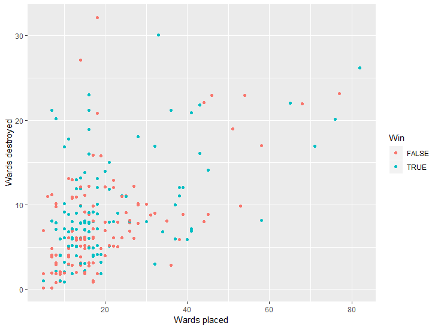
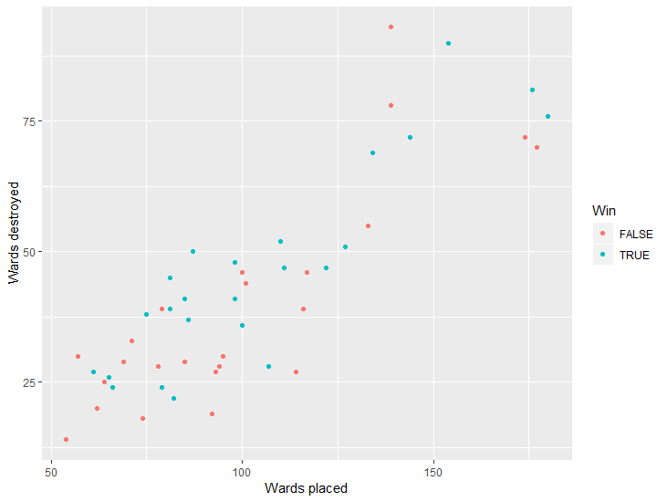

19/07/2019
UKLC Data Analysis - Does warding win games? Coauthors: Kasey, Jack
Over the past few weeks, I've had the fantastic opportunity to work with player and game data as part as my role with Diabolus. As fun as grinding out player statistics and tendencies is, I thought I'd take a step back and see what trends I could identify within the UKLC game data itself, and how well this matches up with what is commonly believed.
Although there are many statistics to choose from, as a support main warding has more of an impact on my playstyle than most. Before getting into the nitty gritty of warding based stats, there are a few things of interest to note for the UKLC games so far.
Blue/Red win rates
For the 24 games that have been played in the UKLC (up to Week 4), only 3** games have featured a blue side victory. This means teams placed on red side have a 81.25% chance of winning*. This is very much not in line with general SoloQ statistics - where blue side only has a slightly advantageous 51.8% win rate.
But where does this difference come from in SoloQ? I've recruited the help of a couple of big brains from Diabolus to help me explain some of the more in-depth game knowledge. He's my long time esports partner Jack (@DBL_Coach) explaining this difference in win rate, and why it occurs.
Hi my name is jack and I have a big brain yadda yaddaAlthough interesting, since the SoloQ statistics are so balanced, I will choose to discard this as a consideration within the analysis.
Other considerations
When analysing whether higher ward placement rates are conducive to winning games, we must also consider to converse case - "do teams ward more when they are winning?". Unfortunately, timeline data is not available for UKLC games so further investigation to the rate of ward placements after some winning indicator (such as gold lead) is not possible. So, this possibility is just a factor to consider throughout. It is also very strange to consider a univariate analysis (that is, only focusing on one variable) for a game as complicated as League of Legends, since there are obviously many co-dependent variables within a game instance which contribute to the victory or defeat of a team. Without trying to be to political, this is also a common problem in many attention grabbing news headlines, where journalists tend to focus purely on one statistic and treat it as the governing factor without considering a multivariate analysis.
In this case, I'll simply acknowledge that the consideration of only wards in a game may be ignorant, but for exploration's sake it's still a worthwhile endeavor.
What is warding?
For the few readers who aren't up to scratch on their League of Legends knowledge, I've got Kasey (@_WEEXIAO) to tell us more about warding, and why it's important.
Hi my name is kasey and I have a big brain yadda yaddaApproach
First of all, the warding data must be found for each game "instance". We'll record for each player of a game how many wards they placed, and how many they destroyed and label whether they were victorious. We can plot this simply as wards placed against wards destroyed, and colour each data point by win status.

From the scatter plot there are no obvious trends, mainly because we're mixing support warding statistics along with other roles. Since we have no indication of which lane we're pulling data from (and it would be messy to do so), this is obviously less than helpful for our investigation. A sensible idea might be to use summary statistics within each game instance to find total warding statistics for an entire team within a game, rather than for individuals.

Although a lot easier to digest, this is also unhelpful. It's not easy to discern whether higher rates of warding (points more to the left) suggests a higher win rate. There is one more factor to consider while doing this kind of analysis - game length. The flaring of the scatter plots suggests fewer games have high rates of warding, likely due to the small amount of games that go on for a longer period. To combat this problem, we'll simply find the wards placed/destroyed per minute by each team for each game.
This is still a little bit messy, but we're no longer suffering from the flaring (or "right facing trumpet") as seen in the previous "time ignorant" graphs. Overall, we can see that the graph is slightly more red on the lower left, and slightly more blue on the upper right. It may help to have more game data, but from this simple analysis we can sort of see that higher warding rates do indicate a higher win rate.
Summary
There's a reason for my cautious language use throughout this article, usually making claims in the statistical world requires modelling, and performance analysis thereof. Since we only have 40 data points (20 games) any modelling on a scatter plot as varied as the above is likely not to render any useful result. But, informed speculation is still fun.
Some interesting notes; **
- · The highest warding rate of any game was achieved by Diabolus against Enclave, the 11th match of the split (3.85 wards placed per minute against 2.97 from Enclave).
- · The lowest warding rate of any game was "achieved" by MNM against Fnatic, the 15th match of the split (2.36 wards placed per minute against 3.32 from FNC).
- · Out of the 16 games, only 5 were won by the team with the lower warding rate.
- · The highest warding rate of any player was XL support KaSing against FNC (game 16) with 1.8 wards per minute.
- · The lowest warding rate of any player was DBL jungler PFI against XL (game 6) with 0.2 wards per minute.
Below are the full tables for match, team and individual breakdowns;
-
listMatch Breakdown
Match Team Wards Placed Per Min Wards Destroyed Per Min Win? 1 DMS 2.75191104933982 1.00069492703266 TRUE NVE 2.58512856150104 0.833912439193885 FALSE 2 DBL 3.74070138150903 1.72157279489904 TRUE PHL 3.76195536663124 1.48777895855473 FALSE 3 ENC 2.94117647058824 1.35294117647059 FALSE MNM 3.23529411764706 1.52941176470588 TRUE 4 BRG 2.86940527283875 1.03004291845494 FALSE XL 3.16370324954016 1.36112814224402 TRUE 5 FNC 3.23119777158774 1.08635097493036 FALSE XL 3.3983286908078 1.3091922005571 TRUE 6 DBL 2.63374485596708 1.02880658436214 FALSE XL 2.51028806584362 1.11111111111111 TRUE 7 MNM 2.82235749861649 0.962921970116215 FALSE XL 2.82235749861649 1.36137244050913 TRUE 8 DBL 3.17748091603053 1.34541984732824 TRUE DMS 3.34923664122137 1.31679389312977 FALSE 9 DMS 2.96809986130374 0.776699029126214 TRUE PHL 3.1622746185853 0.748959778085992 FALSE 10 FNC 2.84879474068663 1.13951789627465 TRUE NVE 2.36669101533966 0.613586559532506 FALSE 11 DBL 3.85164051355207 1.6262482168331 TRUE ENC 2.97432239657632 1.99001426533524 FALSE 12 BRG 3.3153302866639 1.37100124636477 FALSE MNM 3.34025758205235 1.71998338180307 TRUE 13 DMS 3.38931297709924 0.824427480916031 FALSE FNC 3.61832061068702 1.09923664122137 TRUE 14 DBL 3.00319488817891 0.894568690095847 FALSE MNM 2.58785942492013 1.43769968051118 TRUE 15 FNC 3.32225913621262 1.19601328903654 TRUE MNM 2.35880398671096 1.09634551495017 FALSE 16 FNC 3.37895971842002 1.68947985921001 TRUE XL 3.26163472819711 1.83026984747751 FALSE 17 ENC 2.59299781181619 1.2800875273523 FALSE XL 2.85557986870897 1.64113785557987 TRUE 18 BRG 2.11372064276885 1.11248454882571 FALSE PHL 3.04079110012361 0.815822002472188 TRUE 19 DBL 2.87812041116006 1.40969162995595 TRUE DMS 2.79001468428781 0.881057268722467 FALSE 20 MNM 2.4910302409021 1.19938493080472 TRUE NVE 2.82931829830856 0.584315735520246 FALSE -
groupTeam Breakdown
Team Average Wards Placed per Minute PHL 3.32167369511338 FNC 3.27990639551881 DBL 3.21414716106628 DMS 3.0497150426504 XL 3.00198201695236 ENC 2.83616555966025 MNM 2.80593380847485 BRG 2.76615206742383 NVE 2.59371262504976 -
personPlayer Breakdown
Team Player Average Wards Placed per Minute DMS Viggo 1.36340958111292 XL KaSing 1.32360544187889 FNC Prosfair 1.27825272530222 DBL Heathen 1.18639952627864 PHL Visdom 1.13933145331676 NVE Propameal 1.02932479606036 ENC Raizins 0.913588988069499 BRG Fastlegged 0.840036429468427 BRG Munckizz 0.812191268529833 MNM Shogun 0.811103488286015 PHL Sof 0.70961249742395 MNM Noltey 0.682841388323175 FNC Nji 0.660892539773774 DBL PFI 0.633368023917353 ENC Kehvo 0.595542277068714 XL Send0o 0.577458578376402 DBL Furuy 0.558317679207224 FNC Shikari 0.557158364133839 DMS Batu 0.542043085476025 PHL Chemera 0.5198685976102 MNM Only Angel 0.518419635313855 DBL Kakan 0.505383517105646 BRG Diva 0.503306246833391 ENC Renghis 0.501083380814064 NVE Infinity 0.492770473701303 ENC Skude 0.490854228986081 DMS DenVoksne 0.482879942859723 PHL Xizz3l 0.481781288218348 PHL Achuu 0.471079858544124 MNM Chibs 0.461143248936084 DMS Hidon 0.432286663693771 FNC xMatty 0.424741458715391 NVE 3z3 0.410336998885737 DMS Zeiko 0.395267267212573 XL Special 0.386589205890649 NVE Brelia 0.378181867035622 XL Taxer 0.362322027094989 FNC MagiFelix 0.35886130759359 DMS Vixen 0.353920303414963 XL Hjarnan 0.352006763711428 BRG Jakamaka 0.338545455147358 ENC Beeley 0.335096684721891 MNM Yusa 0.332426047615719 DBL Dragdar 0.330678414557414 NVE Spark 0.283098489366738 BRG Zhergoth 0.272072667444824
So, I hope you learnt something about warding in the UKLC and perhaps something about the methods of data analytics.
If you have any suggestions, comments or hate, feel free to tweet me @samhine_.
Until next time...
27/09/2018
Franchised Leagues in Esports, Yay or Nay? Speakers: Michal "CARMAC" Blicharz, Tomi Kovanen
Moderator: Ian Smith
Although franchising comes nowhere close to UK University Esports, I found this talk particularly interesting. Hearing what industry professionals have to say was a lot more insightful than shouting down the mic with my friends on Discord.
Esports franchising (as generally described by the panellists) is the implication that an organisation can permanently feature in an esports league. The beginning of the conference mainly discussed how franchising in the US is already becoming established (e.g. NALCS), and now the esports organisations there place a larger focus on business since their participation in the tournaments are certain.
To me, whether one decides they are “on-board” with the franchising of leagues comes down to this point – does the security of an organisation in a tournament further encourage new talent and is it more entertaining for the viewers?
A point which certainly resounds with me is that matches between two franchised orgs seem far less important. Both have secured their spot, and there’s little to no risk one of the teams is being removed from it anytime soon. The sheer number of matches in something similar to the NALCS is pretty overwhelming, to the point where it is only really reasonable to follow the teams you care about. This leads on nicely to how viewers align themselves with the professional scene. In my experience, is it more common for viewers for be fans of individual players rather than of organisations, of course this is purely anecdotal, but it’s something organisations must think about. Ultimately, do you make the decision to keep fans from continuing the roster, or include new talent to win?
The difference in acquiring talent in franchised leagues also has both it’s advantages and disadvantages. From the perspective of new players, you now have a slightly more structured path in your career – get hired by one of the top organisations. The sad thing is that there is a ceiling at which a player can progress with unfranchised brands; and with decisions being made to continue rosters to keep fans happy, it’s a hard ceiling to break through.
The argument can be made that franchising encourages organisations to become riskier with new roster picks, but in my amateur view I have a feeling most will choose to stick with what’s safe, and what they know the fans would love.
My personal opinion falls to this; franchising doesn't sit right with me. I'm sure it makes more business sense in most scenarios, but it seem to unintentionally take away from what to me is at the core of competitive gaming - meritocracy. The thing I love about open leagues is the ability of a team of 5 friends to get together, decide they want to be the best, and do it. However unlikely that may be, it should be possible.
27/09/2018
UK Esports - It's coming home Speakers: Kieran Holmes-Darby, Scott Gillingham, Dom Sacco, Ben Greenstone, Martin Wyatt
Moderator: Ollie Ring
Whenever the topic of UK Esports comes up, I always get excited. Not only because it’s my home country, but because the likelihood of university esports coming up is far more likely.
It’s commonly known that esports has mostly grown in the complete wrong direction, the big leagues with the best players were established far before the university and high school ones. It’s great to see so many established individuals on the panel all looking towards the university scene and giving their encouragement.
In my view, it’s all about being patient. There are very few brands who have fully immersed themselves with the collegiate scene (OCUK, noblechairs, ASUS ROG), as it’s understandable – it’s hard to know what the fuck is going on. Personally, I’m doing my best (as best a university organisation can) to grow organisations’ interest in the scene and incentivise them to get involved. Of course, there are limits to not only what I’m able to do, but what I’m capable of (they’re different, trust me). As well as obvious time constraints of being a university student, I’m going to be far less experienced that other competing and more secure (semi) pro league organisations.
Something which is often mentioned alongside the university topic is the passion of those willing to get involved. Many leaders/committee members of these university societies are dedicated tens of hours a week to try and grow/market/improve their brand with little to no reward or recognition. There are whispers in the air of organisations taking more note of student effort, but even then, the collegiate scene is so saturated with passion, it’s becoming harder and harder to stand out. Keep in mind however, that this is a great thing for companies, organisations, and the collegiate scene in general.
The speakers were asked to give their 5-year predictions of the UK scene, so I’ll hop in and give my own. My guess is that since esports has just been supported but BUCS, that universities start to take things a little more seriously. There will be esports arms of the university rather than of the students’ unions, and a lot more money will be given to student organisers to help brand themselves against the university and throw more impressive events. This will bring in sponsors (endemic and otherwise) since being involved with a university and esports is an absolutely huge marketing opportunity